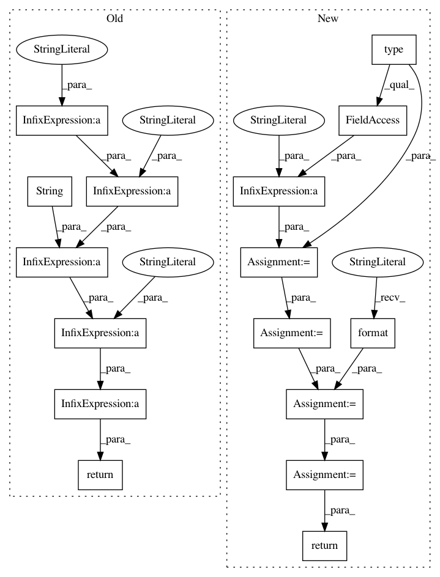

97150931596da87d9933e4994f5999df970477fe,src/skmultiflow/drift_detection/page_hinkley.py,PageHinkley,get_info,#PageHinkley#,102
Before Change
self.in_concept_change = True
def get_info(self):
return "PageHinkley: min_num_instances: " + str(self.min_instances) + \
" - delta: " + str(self.delta) + \
" - lambda: " + str(self._lambda) + \
" - alpha: " + str(self.alpha)
After Change
string
Configuration for the concept drift detector.
description = type(self).__name__ + ": "
description += "min_num_instances: {} - ".format(self.min_instances)
description += "delta: {} - ".format(self.delta)
description += "threshold (lambda): {} - ".format(self.threshold)
description += "delta: {} - ".format(self.delta)
description += "alpha: {} - ".format(self.alpha)
return description
In pattern: SUPERPATTERN
Frequency: 3
Non-data size: 16
Instances
Project Name: scikit-multiflow/scikit-multiflow
Commit Name: 97150931596da87d9933e4994f5999df970477fe
Time: 2019-03-12
Author: jacob.montiel@gmail.com
File Name: src/skmultiflow/drift_detection/page_hinkley.py
Class Name: PageHinkley
Method Name: get_info
Project Name: scikit-multiflow/scikit-multiflow
Commit Name: ad2ba62d566175ea3c218f9413262fd3c7c222cc
Time: 2018-09-10
Author: jacob.montiel@gmail.com
File Name: src/skmultiflow/neural_networks/perceptron.py
Class Name: PerceptronMask
Method Name: get_info
Project Name: scikit-multiflow/scikit-multiflow
Commit Name: 8bfbc083bcd2b70be6f1df48ed138255b2e5740b
Time: 2019-03-12
Author: jacob.montiel@gmail.com
File Name: src/skmultiflow/drift_detection/ddm.py
Class Name: DDM
Method Name: get_info